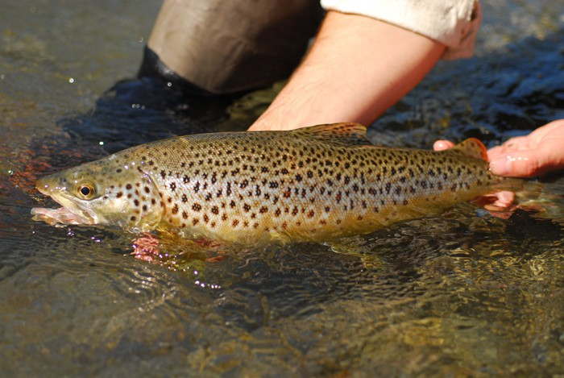
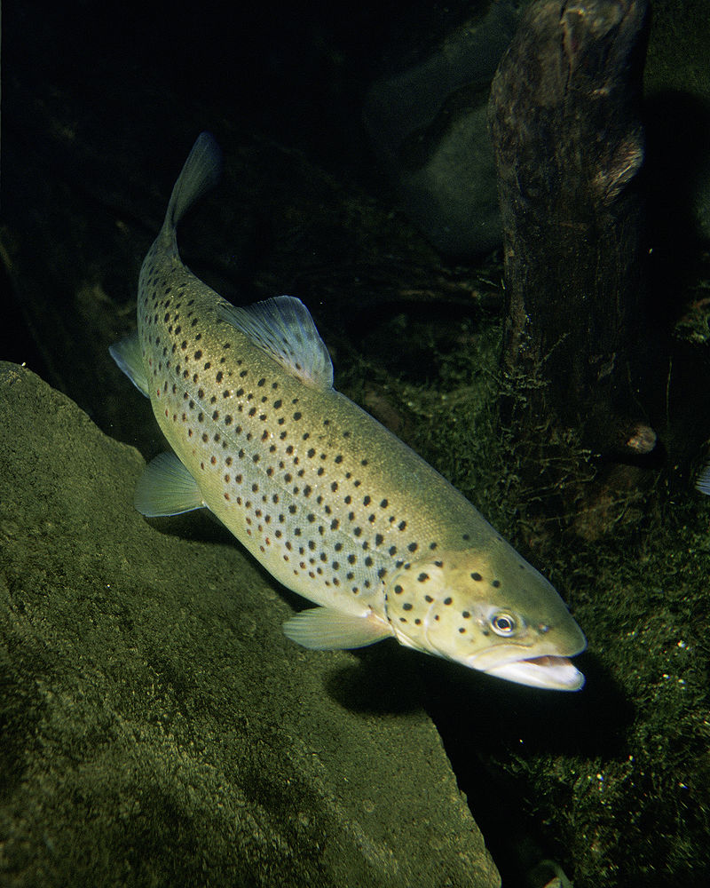

Pstrąg potokowy (Salmo trutta m. fario) to gatunek ryby z rodziny łososiowatych. To biologiczna odmiana troci,  która przystosowana jest do życia w wodach słodkich. Ciało jest bocznie spłaszczone. Grzbiet ma brunatny lub czarny kolor, boki są żółtawe, spód kremowy. Na ciele widoczne są czarne i czerwone plamki.
Występowanie i środowisko
Gatunek występuje w Europie, Algierii, Maroku i Azji Mniejszej. Został wprowadzony do rzek Australii, Indii, Afryki, i Ameryki Północnej. W Polsce występuje w górnych dopływach Wisły i Pomorza Zachodniego, rzadziej w Odrze. Ryba ta unika strumieni, w których nie ma brzeżnych kryjówek oraz zróżnicowania głębokości dna.
Tryb życia i zachowanie
Prowadzi samotniczy tryb życia. Przejawia zachowania terytorialne.
Pożywienie
Poluje na rożne organizmy wodne, a także na latające owady.
Rozmnażanie
Rozród następuje na jesień, gdy temperatura wody wynosi 2-4 °C. Wylęg ma miejsce dopiero w marcu.  Przez pół roku przebywają w okolicy tarlisk.
Ciekawostki
Mięso pstrąga potokowego jest bardzo smaczne. W pysku znajdują się zęby w obu szczękach. Rośnie powoli.
Okres ochronny: w przypadku pstrąga potokowego od 1 września do 31 stycznia w rzece Wiśle i jej dopływach od jej źródeł do ujścia rzeki San, w rzece San i jej dopływach oraz w rzece Odrze i jej dopływach od granicy państwowej z Republiką Czeską do ujścia rzeki Bystrzycy oraz w rzece Bystrzycy i jej dopływach. W pozostałych wodach od 1 września do 31 grudnia. Okres ochronny dla pstrąga tęczowego nie obowiązuje.
Wymiar ochronny: dla pstrąga potokowego - o 25 cm w Wiśle i jej dopływach od jej źródeł do ujścia Sanu, w Odrze i jej dopływach do granicy państwowej z Republiką Czeską do ujścia rzeki Bystrzycy oraz w Bystrzycy i jej dopływach. W pozostałych wodach -do 30 cm. Brak wymiaru ochronnego dla pstrąga tęczowego.
Dobowy limit połowu: pstrąg potokowy - 3 szt. razem z boleniem, karpiem, lipieniem, amurem, sandaczem, szczupakiem, brzaną. Pstrąga tęczowy – 4 szt.
Rekord Polski: 5,3 kg 79 cm